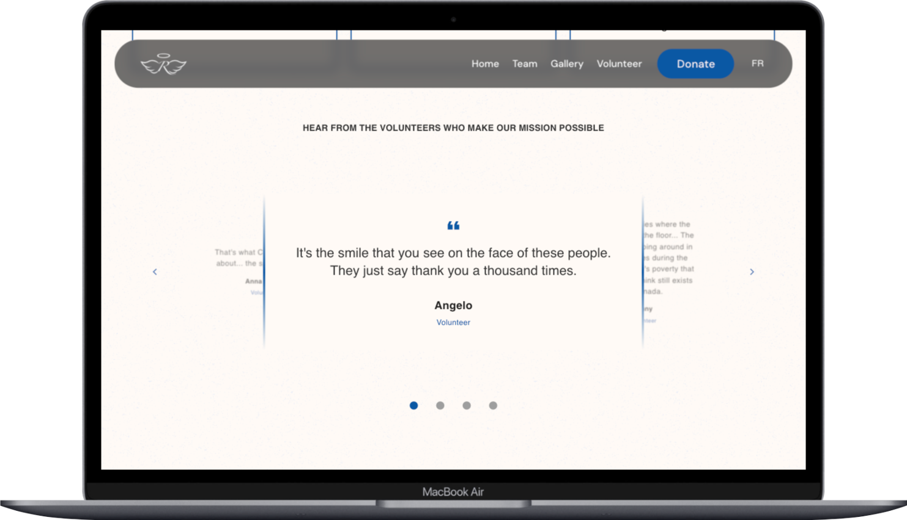
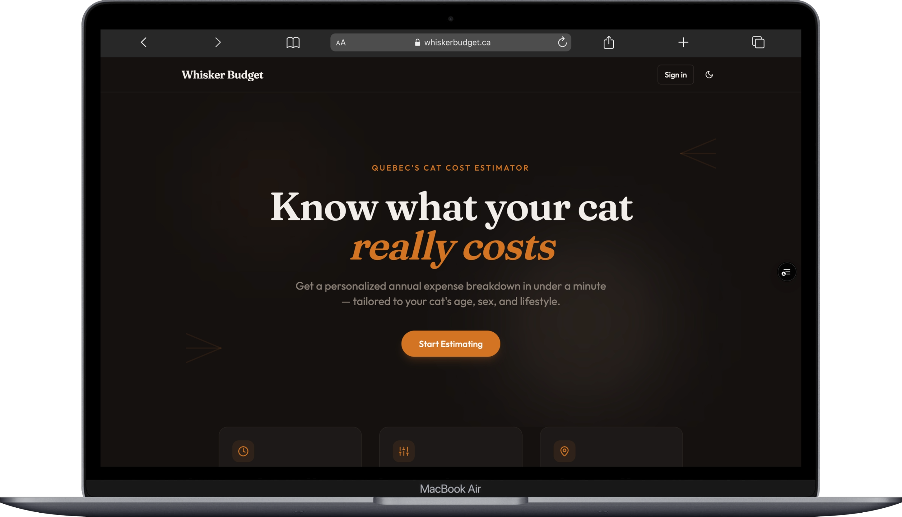
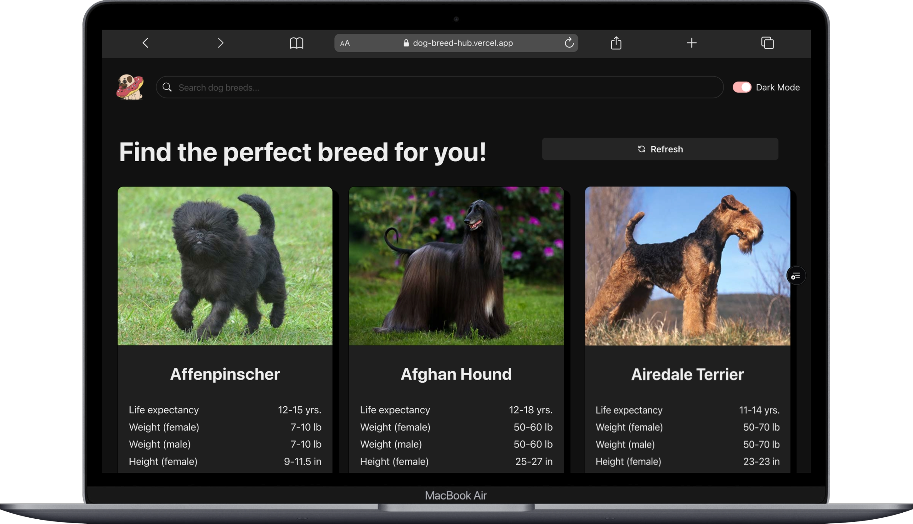
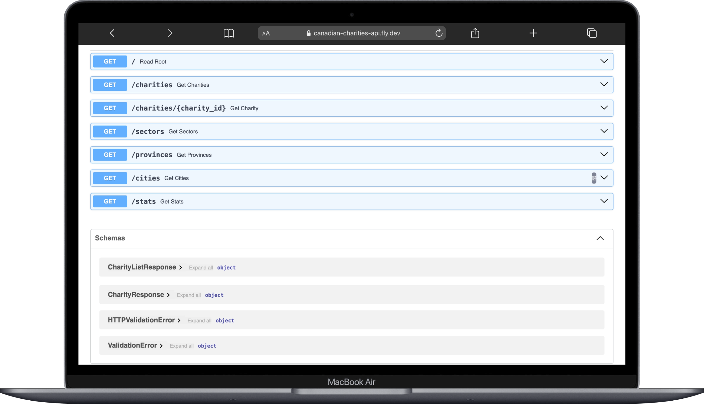
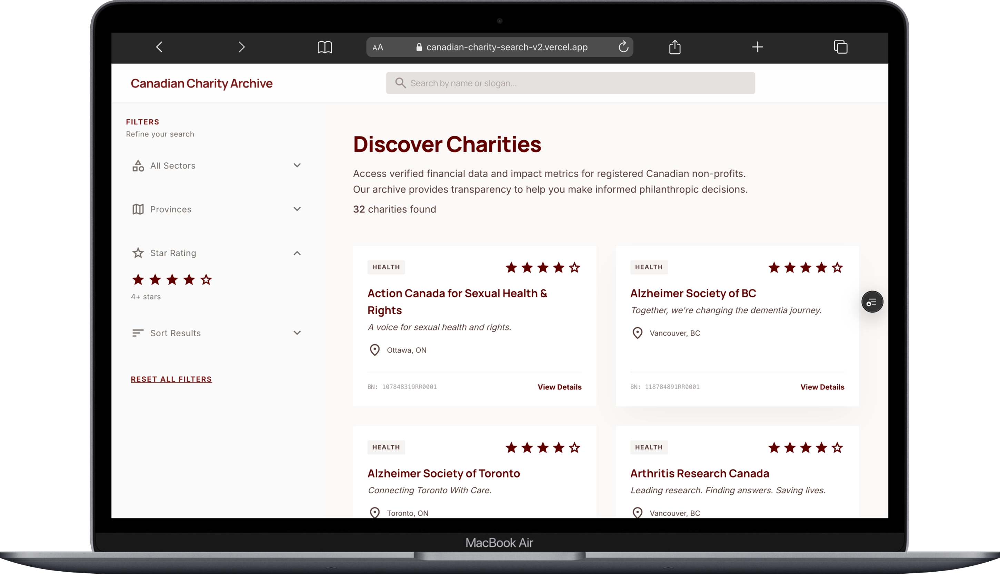
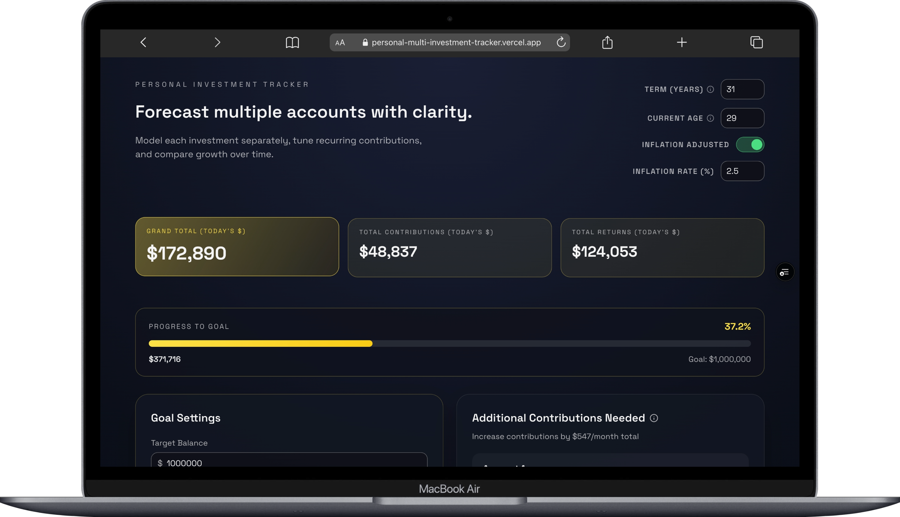

Spécialiste Support Technique · Développeuse Full-Stack · Saint-Hyacinthe
Jessica Iacovozzi
Défiler pour explorer
Plus proche du problème que ben des ingénieurs. Plus proche du code que ben des équipes de support.
Je suis une spécialiste support technique et développeuse full-stack basée au Canada, avec une expertise à l'intersection du débogage technique avancé, de l'infrastructure développeur et de la communication transversale. Je règle pas juste des tickets — je bâtis les systèmes, la documentation et les outils qui évitent qu'ils se reproduisent.
Chez Mediaclip, j'ai transformé une documentation client éparpillée en une ressource d'intégration structurée, réduisant la friction pour les opérateurs B2B naviguant dans une API SaaS complexe. Chez Virtuose Technologies, j'ai livré des fonctionnalités full-stack sur Vue.js, Django et React, et j'ai été personnellement recommandée pour rejoindre une nouvelle équipe.
Je performe là où la profondeur produit rencontre la responsabilité technique — intégrations SaaS, écosystèmes API, systèmes orientés développeurs. J'ai à cœur de rendre les choses robustes, bien documentées, et plus simples pour la personne qui vient après.
Projets sélectionnés
Rosetta's Angels
Application web bilingue Vue.js 3 pour un organisme sans but lucratif avec 70% d'amélioration des performances de chargement (1,4s → 400ms) via le lazy loading, la division de bundle et la compression. Sécurité renforcée avec protection XSS/CSRF, reCAPTCHA v3, sanitisation des données et validation côté serveur contre une API REST Airtable.

Whisker Budget
Estimateur de coûts full-stack construit avec Next.js, React 19, TypeScript et Supabase, avec suivi des dépenses en temps réel, requêtes multi-tables et estimations éditables par glisser-déposer. Interface conforme WCAG utilisant Tailwind CSS, Radix UI, React Hook Form et validation Zod.

Dog Breed Hub
Application React responsive avec défilement infini et intégration API Ninjas via Axios et React Query, et une interface accessible conforme WCAG construite avec Chakra UI et HTML5 sémantique. Architecture de composants propre avec des patterns de récupération de données efficaces.

Canadian Charities API
API RESTful offrant un accès consultable aux données des organismes de bienfaisance canadiens avec filtrage par note, ville, secteur et impact — plus tri complexe et pagination. Architecture Docker déployée sur Fly.io avec une documentation API complète décrivant tous les endpoints, paramètres de requête et schémas de réponse.

Charity Finder
Application web full-stack qui aide les utilisateurs à découvrir des organismes de bienfaisance canadiens selon leurs préférences et objectifs d'impact. Construite avec Next.js, Supabase et Tailwind CSS, avec recherche d'organismes avec filtres et profils détaillés.

Investment Tracker
SPA React + TypeScript client uniquement, construite avec Vite, qui modélise des projections d'investissement multi-comptes avec intérêts composés, calendrier de contributions et règles des comptes à avantages fiscaux canadiens (CÉLI, REER, CELIAPP, RERI). Tout l'état persiste dans localStorage sans backend — avec calculateurs inverses en mode objectif, ajustement pour l'inflation et visualisations Recharts, déployée sur Vercel.

Compétences techniques
Support & Outils
- Freshdesk · Jira · Postman
- Guru · REST APIs · GraphQL
- Débogage API · Gestion des SLA
- Documentation Technique
- Shopify · Magento · WooCommerce · CommerceTools
Langages
- JavaScript (ES6+) · TypeScript
- Python · Ruby
- HTML5 · CSS / SASS
- SQL · KQL
Frameworks
- React · Next.js · Vue.js
- Node.js · Express.js
- Django · Ruby on Rails
Plateformes & DevOps
- Git · GitHub
- Docker · AWS · Azure
- CI/CD (GitHub Actions)
- Fly.io · Vercel
Données
- PostgreSQL · SQLite · MongoDB
- Supabase · Airtable
Pratiques
- Accessibilité WCAG
- Agile / Scrum
- Intégration SaaS
- Rédaction Technique
- Bilingue FR / EN